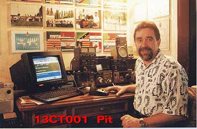

Wer heute auf CB-Funk DX fährt
und dabei auf das Rufzeichen Charly Tango trifft, weiß
das dies einmal ein angesehener Verein war.
Gründer und Präsident des Charly Tango war Eberhard Albrecht,
besser bekannt als:
"PIT 13CT001"!


Im Februar 1985 wurde dieser Club gegründet mit dem Viezepräsidenten Fred aus
Winterwijk 19CT001 in den Niederlanden.
Im Jahre 1987 wurde der Club als Verein eingetragen.
“Borderland“ bedeutet übersetzt “Grenzland“ und das war im Fall die Gegend zwischen
dem Deutschen Borken / Emmerich und dem Niederländischen Arnsheim am Niederrhein.
PIT ’s weltweite DX-Gruppe hatte sich zum Ziel gesetzt Freundschaften über den CB-Funk
Zu schließen. Ganz unabhängig von Nationalität, Religionszugehörigkeit, Rasse und
Politische Einstellung.
In jedem Jahr fanden große Int. Meeting, DX - Expeditionen, Konteste mit Sonderrufzeichen für
Holidday, Fieldays und Meetings statt. Der CT war mit seinen Mitgliedern der AFD
angeschlossen und damit im DAKfCBNF vertreten.
Die damals neuesten Informationen standen in der jährlich erschienenden Mitgliederliste,
die damals schon 120 Seiten stark war und mit vielen Fotos illustriert war.
Der CHARLYTANGO-DX-CLUB wurde im Februar 1985 in Borken / Wesf.
von 13 CT 001 PIT ( Eberhard ) gegründet. Es war ein international tätiger
Verein mit damals mehr als 6000 aktiven Funkern auf der ganzen Welt.
Die Ziele des Clubs waren, DX im CB - Band ( 11m ) zu fahren um die
internationale Freundschaft unter den Funkern zu fördern ohne Vorurteile
gegen Religion, Rasse oder politischer Gesinnung.
In dem DX - Club hatte jeder Funker sein eigenes Rufzeichen ( welches auch
heute noch aktiv ist ) , wodurch er im DX - Verkehr schnell und sicher für die
Gegenstation erkennbar ist und der QSL - Kartenaustausch ohne langwierige
Adressenangaben ermöglicht wird. Viele aktive Stationen mit dem CT - Call
sind im Ausland QRV.
Über die Geschichte des Internationalen Borderland DX - Club und allgemeine
Informationen zum Thema Funk sowie Links werdet ihr hier finden.
im Jahr 2000 ist Eberhard Albrecht alias PIT 13CT001
nach schwerer Krankheit im Alter von nur 49 Jahren verstorben.
Er war rund um die Uhr für seinen Club und seine Mitglieder zu erreichen !!